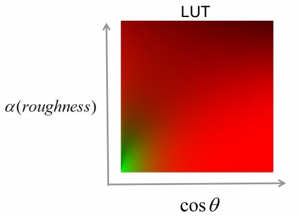
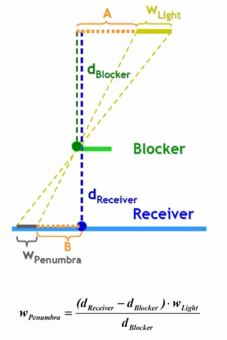

P61
Image-Based Lighting (IBL)
P62
Basic Idea of IBL
对真实的环境光照做预处理，快速地计算环境光照与材质之间的卷积。
SH 的局限性：SH 的表达比较粗糙，只能有明暗的感觉，达不到场景细节感和凹凸感的效果。
P64
Diffuse Irradiance Map

根据上文可知，\(L_o（x，W_o）\) 可以分为 diffuse 项和 specular 项。 Diffuse 须提前把卷积结果算好存下来。实时渲染时查表即可。
P65
Specular Approximation

Specular 项的推导比较复杂，且做了大量假设和近似。
但 specular 结果与参数 roughness 有关。因此将不同 roughness 的结果存到了不同的 mipmap 中。因为，roughness 越大，对光的敏感度越低，可以放到 mipmap 的最低级。
方法详见 GAMES 201。
P66
Approximation: part (1/2)


P67
Approximation: part (2/2)


P68
Quick Shading with Precomputation

P69
Shading PBR with IBL

P70
Classic Shadow Solution
P75
Hard Shadow vs Realistic Shadow

P76
PCF - Percentage Closer Filter
- Target problem
- The shadows that result from shadow mapping aliasing is serious
- Basic idea
- Sample from the shadow map around the current pixel and compare its depth to all the samples
- By averaging out the results we get a smoother line between light and shadow

用滤波的法做软阴影。
P77
PCSS - Percentage Closer Soft Shadow
- Target problem
- Suffers from aliasing and under sampling artifacts
- Basic idea
- Search the shadow map and average the depths that are closer to the light source
- Using a parallel planes approximation

P78
Variance Soft Shadow Map
- Target problem
- Rendering plausible soft shadow in real-time
- Basic idea
- Based on Chebyshev‘s inequality, using the average and variance of depth, we can approximate the percentage of depth distribution directly instead of comparing a single depth to a particular region(PCSS)

P79
Summary of Popular AAA Rendering
光：Lightmap + Light probe
材质： PBR + IBL(环境光)
阴影：Cascade shadow + VSSM
P80
Moving Wave of High Quality
P81
Quick Evolving of GPU
- More flexible new shader model
- Compute shader
- Mesh shader
- Ray-tracing shader
- High performance parallel architecture
- Warp or wave architecture
- Fully opened graphics API
- DirectX 12 and Vulkan
P82
Real-Time Ray-Tracing on GPU

P83
Real-Time Global Illumination
Screen-space GI
SDF Based GI
Voxel-Based GI（SVOGI/VXGI）
RSM / RTX GI
P86
Shader Management
P90
Uber Shader and Variants
A combination of shader for all possible light types, render passes and material types
- Shared many state and codes
- Compile to many variant short shaders by pre-defined macro

利用 uber 写好少量 shader 模版，然后自动生成大量 shader.
P92
Cross Platform Shader Compile